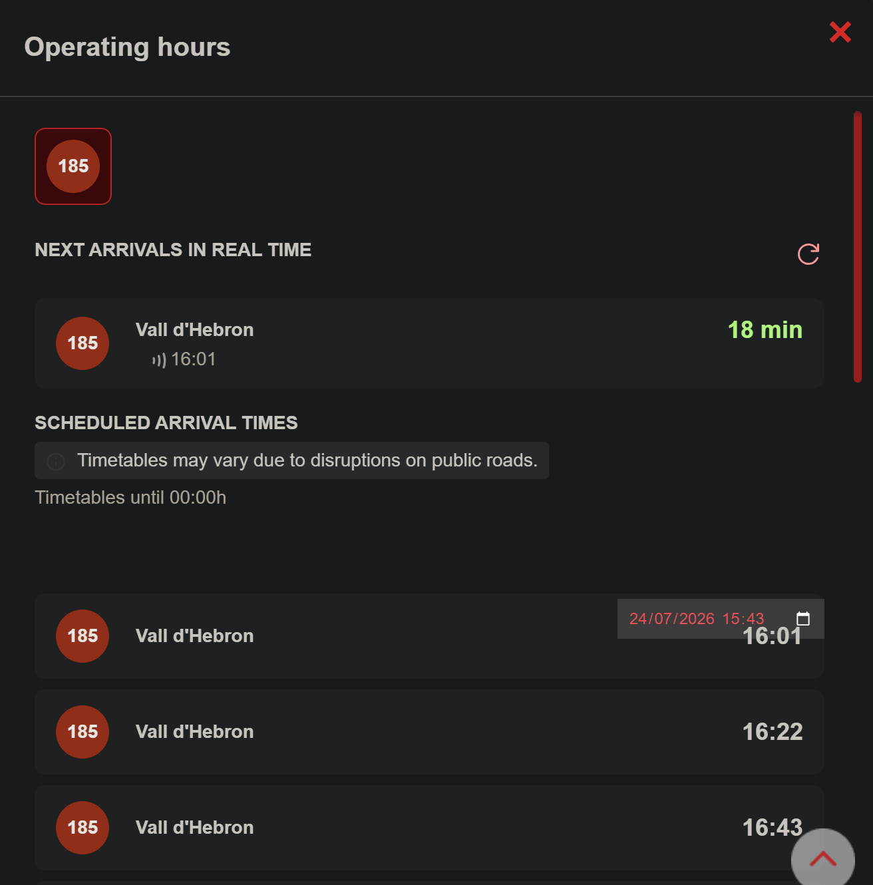
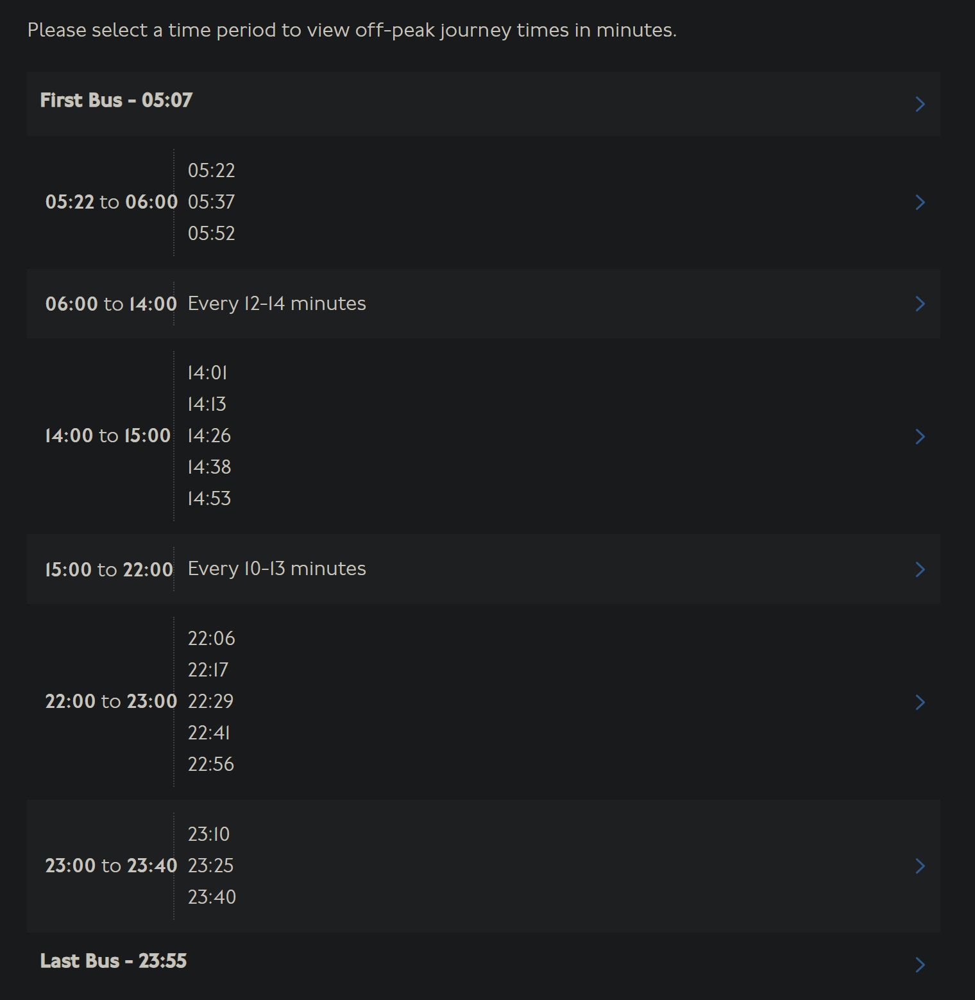
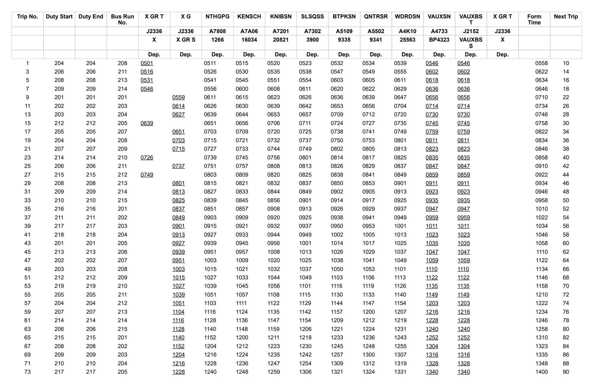

Only non-pdf
Introduction
Only online timetables have become more and more common, especially in big european metropolises. They are often accompanied by modern and attractive looking websites, that are pleaseant to use. This style of timetable replaces the standard printable table layout timetable, which helps to keep the costs down for the transit agency and also is easier to change in case of service disruptions. On the other hand it's inaccesible for people without internet in terms of access and printing the timetable.
Cities with only online timetables
Barcelona

Barcelona has a separate online timetable for each route and each stop. Each departure has it's own tile with departure time and an information, whether this time was sourced from a timetable or a realtime location of a bus.
Warsaw

Warsaw has a separate online timetable for each route and each stop. Unfortunately it doesn't have a pdf version, I think it would be easy to make it.
London (kinda)

London has a separate online timetable for each route and each stop. First and last row represent first and last departures. Each hour has it's own row, but if the departures are frequent enough they are grouped into one.

London also has timetables in a pdf format, although they are harder to find than online ones, also they're hard to read and unintuitive to use.